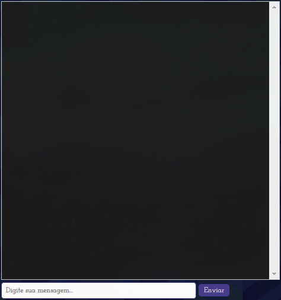
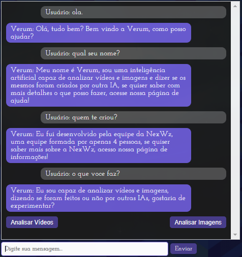
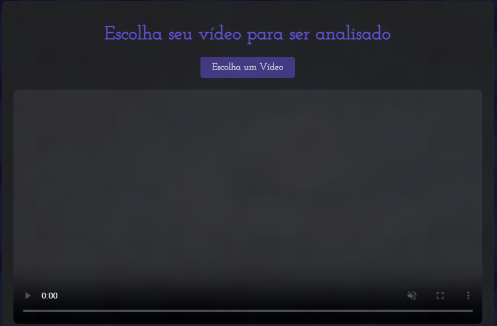

Bem-vindo à Página de Ajuda
Esta seção foi desenvolvida com o intuito de fornecer apoio e ajuda em relação ao funcionamento do site, a inteligência artificial e as principais questões feitas por usuários, servindo como suporte.
Logo abaixo estão as questões que serão abordadas:
◇ Importação de vídeos e imagens para análise.
◇ Regras e Funcionamento do Fórum.
ChatBox e seu funcionamento
O site Verum conta com uma inteligência artificial em sua página inicial para fornecer ao usuário uma breve apresentação do que pode ser utilizado no site, desde as importações de vídeos e imagens até os básicos do Fórum.
Logo abaixo, uma imagem ilustrativa da caixa de texto utilizada para a inteligência artificial:
Tente iniciar uma conversa com a IA utilizando os textos abaixo!
◇ Olá.
◇ Qual seu nome?
◇ Quem te criou?
◇ O que você faz?
Veja como ficaria uma conversa utilizando estes comandos.
Note que logo abaixo da resposta à pergunta "O que você faz?" aparecem duas opções. A primeira sendo "Analisar vídeos" e a segunda "Analisar imagens". Ao clicar em qualquer uma das duas, você será direcionado para uma página de uso da nossa IA, correspondente ao botão selecionado. Para analisar vídeos, utilize o primeiro botão. Já, para analisar imagens, utilize o segundo botão.
Importação de vídeos e imagens para análise
Nosso site de verificação foi desenvolvido para ajudar você a determinar se vídeos ou imagens são reais ou gerados por inteligência artificial (IA). Ao acessar a página inicial, você encontrará dois botões: um para vídeos e outro para imagens. Para iniciar o processo de análise de vídeos, basta clicar no botão "Analisar Vídeos". Isso o direcionará para uma nova página com uma interface simples e intuitiva, projetada para facilitar o uso.
Na nova página, você verá uma caixa central com um botão de "Escolha um Vídeo". Clique neste botão para escolher o vídeo que deseja analisar a partir do seu dispositivo. Após selecionar o vídeo, ele começará a ser carregado em nosso sistema. Nossa tecnologia de IA entrará em ação, utilizando algoritmos avançados para examinar o vídeo em busca de quaisquer sinais de falsificação ou manipulação.
Depois de um breve período, o vídeo analisado aparecerá na tela. Se for identificado que o vídeo é falso, os motivos serão destacados diretamente nele. Além disso, abaixo do vídeo, haverá uma caixa de texto explicativa que detalha os erros e manipulações identificados pela nossa IA. Nosso sistema é projetado para oferecer resultados precisos e confiáveis, ajudando você a verificar a autenticidade dos materiais carregados. Esperamos que nossa ferramenta seja útil para suas necessidades de análise e verificação. Caso tenha alguma dúvida ou precise de suporte adicional, estamos à disposição para ajudar!
Cadastro e Login
Cadastro
Não possui uma conta? Acesse este link para criar uma.
Login
Para acessar sua conta, basta inserir seu e-mail e senha cadastrados anteriormente. Após isso, utilize o botão "Entrar".
Regras e Funcionamento do Fórum
Regras
Para garantir que o nosso fórum da comunidade seja um espaço seguro e acolhedor para todos os usuários, estabelecemos algumas regras básicas que todos devem seguir. Primeiramente, é essencial que todos os membros tratem uns aos outros com respeito. Comentários ofensivos, discriminatórios ou abusivos não serão tolerados, pois buscamos manter um ambiente amigável e inclusivo.
É importante que o conteúdo publicado no fórum seja apropriado e relevante. Os usuários devem se concentrar em tópicos relacionados ao tema do fórum, evitando assuntos irrelevantes ou qualquer tipo de conteúdo inapropriado. Em particular, é estritamente proibido postar conteúdo adulto ou sexual, garantindo assim um ambiente seguro para todos os membros, independentemente da idade.
Spam e propaganda de qualquer tipo não são permitidos. Links externos devem ser compartilhados apenas se forem relevantes para a discussão em questão. Além disso, a proteção da privacidade dos usuários é uma prioridade. Portanto, é proibido compartilhar informações pessoais suas ou de outros sem permissão, como endereços, números de telefone ou qualquer outra informação sensível.
Incentivamos debates construtivos e saudáveis, mas pedimos que os usuários evitem confrontos agressivos. Discordâncias são naturais e até bem-vindas, desde que tratadas com civilidade. Se você encontrar qualquer conteúdo que viole estas regras, utilize a função de denúncia para informar os moderadores, que tomarão as medidas necessárias.
Além disso, respeitar a propriedade intelectual é fundamental. Certifique-se de ter os direitos necessários para compartilhar qualquer conteúdo que não seja de sua autoria, evitando assim problemas legais e respeitando o trabalho dos criadores originais.
Funcionamento
O fórum da comunidade do nosso site foi criado para facilitar a troca de informações e experiências sobre a autenticidade de imagens e vídeos. Os usuários podem publicar imagens e vídeos que descobriram ser gerados por IA ou que são autênticos, juntamente com uma breve descrição ou título que forneça contexto sobre o conteúdo compartilhado. As interações no fórum permitem que os usuários comentem sobre as postagens, participem de discussões e trocas de ideias. Além disso, é possível curtir as postagens para mostrar apoio ou concordância.

Nosso objetivo é criar um espaço colaborativo onde os membros possam aprender uns com os outros e compartilhar suas descobertas sobre a autenticidade de imagens e vídeos, sempre respeitando as diretrizes estabelecidas. Se precisar de assistência ou tiver dúvidas sobre o uso do fórum, nossa equipe está sempre à disposição para ajudar.
Planos pagos
Planos de Assinatura do Verum
O Verum oferece dois planos distintos para atender às diferentes necessidades dos nossos usuários: Veritas e Auctus. Cada plano proporciona um conjunto único de benefícios, garantindo que você encontre a opção ideal para otimizar sua experiência na nossa plataforma.
| Plano | Suporte base | Benefícios do Suporte | Benefícios das análises | Experiência no Fórum |
|---|---|---|---|---|
| Veritas | ✔️ | Suporte via e-mail Respostas em até 4 dias úteis |
❌ Limitado a 5 análises por dia |
N/A |
| Auctus | ✔️ | Suporte via e-mail e chat Respostas em até 24h Suporte prioritário |
✔️ Número de análises ilimitado Acesso antecipado às atualizações |
Acesso a gifs como banners e fotos de perfil Temas e layouts exclusivos Sem anúncios |
Plano Veritas
O plano Veritas é ideal para quem busca uma solução básica com suporte confiável. Os assinantes deste plano têm acesso ao suporte base via e-mail, com respostas garantidas em até 4 dias úteis. Embora o suporte seja eficiente, o plano Veritas limita os usuários a 5 análises por dia e não inclui benefícios adicionais relacionados às análises. No que diz respeito à experiência no Fórum, este plano não oferece acesso a recursos exclusivos, como banners ou temas personalizados, e mantém uma navegação com anúncios.
Plano Auctus
Para uma experiência mais completa e enriquecedora, o plano Auctus é a escolha recomendada. Os assinantes deste plano recebem suporte prioritário via e-mail e chat, com respostas em até 24 horas, assegurando uma assistência ágil e eficaz. Além disso, o plano Auctus permite um número ilimitado de análises e oferece acesso antecipado a atualizações da plataforma. Os benefícios se estendem também à experiência no Fórum, que inclui acesso a gifs como banners e fotos de perfil, temas e layouts exclusivos, e uma navegação sem anúncios. Este plano é perfeito para quem deseja maximizar suas interações e desfrutar de todas as funcionalidades avançadas do Verum.
Contato
Utilize o link de e-mail verumsup@gmail.com para enviar sua mensagem. Estaremos fornecendo assistência com suas dúvidas ou problemas. Tenha em mente que sua resposta será enviada de acordo com o prazo relacionado ao seu plano.
Caso presencie problemas relacionados à sua assinatura, envie-nos o quanto antes um pedido de ajuda para o e-mail oficial: verumassinaturassup@gmail.com.